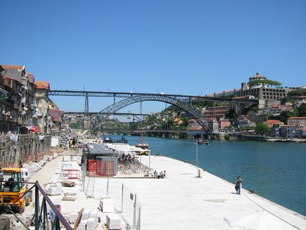

Mesto Porto z reko Douro in petimi znamenitimi mostovi. Dva najbolj spektakularna sta zgrajena v XIX stoletju. Most Dona Maria Pia Railway Bridge le¾i vi¹je ob reki in je zgrajen z revolucionarno tehniko Gustava Eiffela leta 1877. Popolnoma kovinski most z 350 meterskim lokom izgleda kot bi visel v zraku. Na fotografiji je most Dom Luis I, ki zdru¾uje mesto z Vila Nova De Gaia, kjer se nahajajo vinske kleti (na levem bregu, desno na sliki). Tu so vèasih tovorili na ladje imenovane 'rabelos' moèno vino Portovc in ga izva¾ali prete¾no v Anglijo.